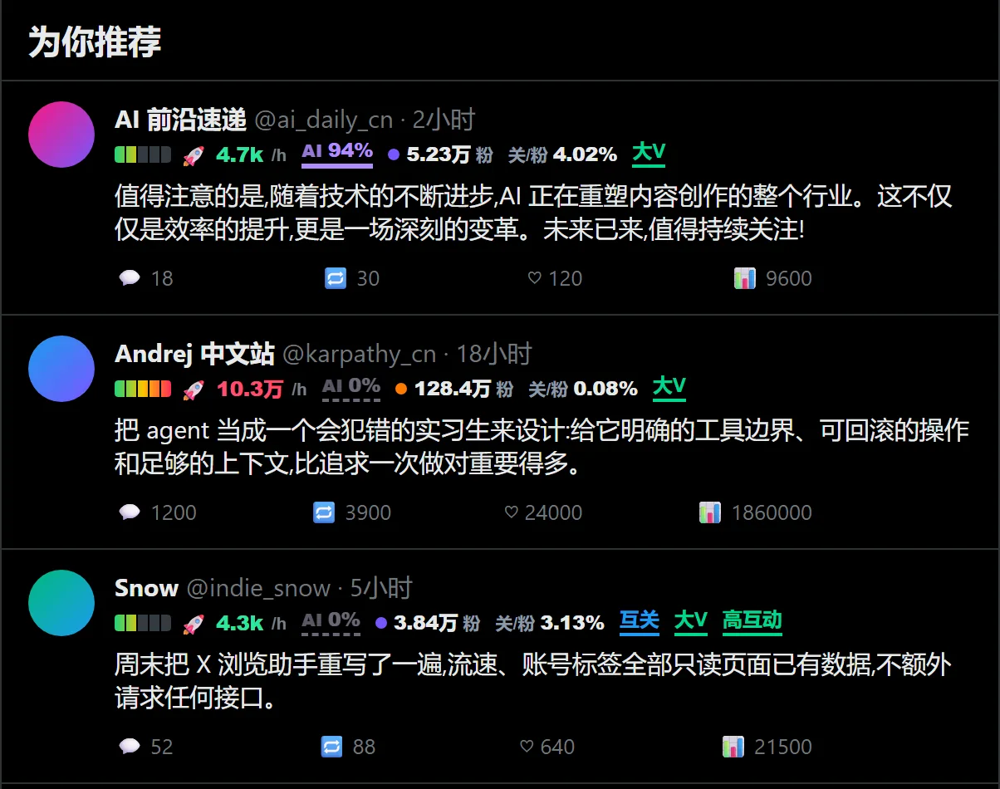
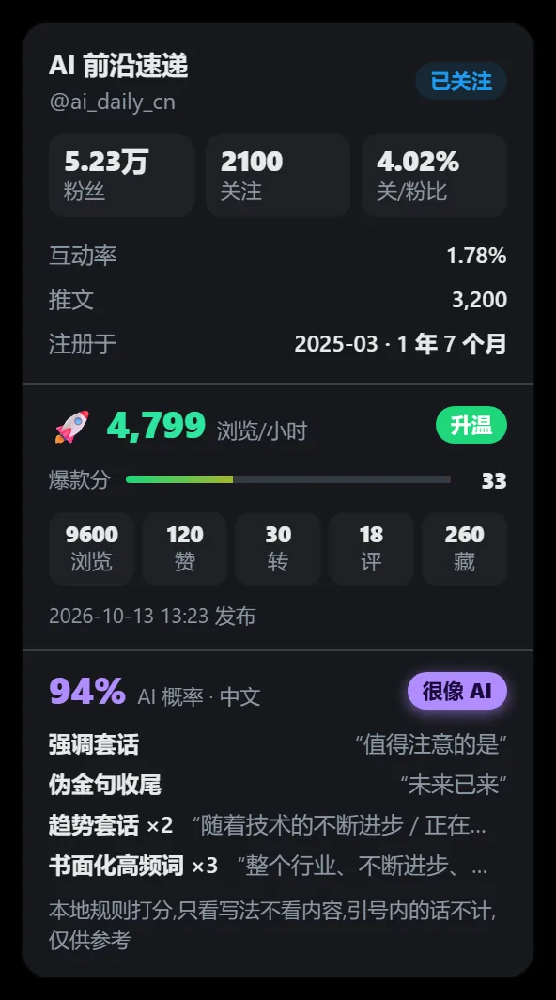
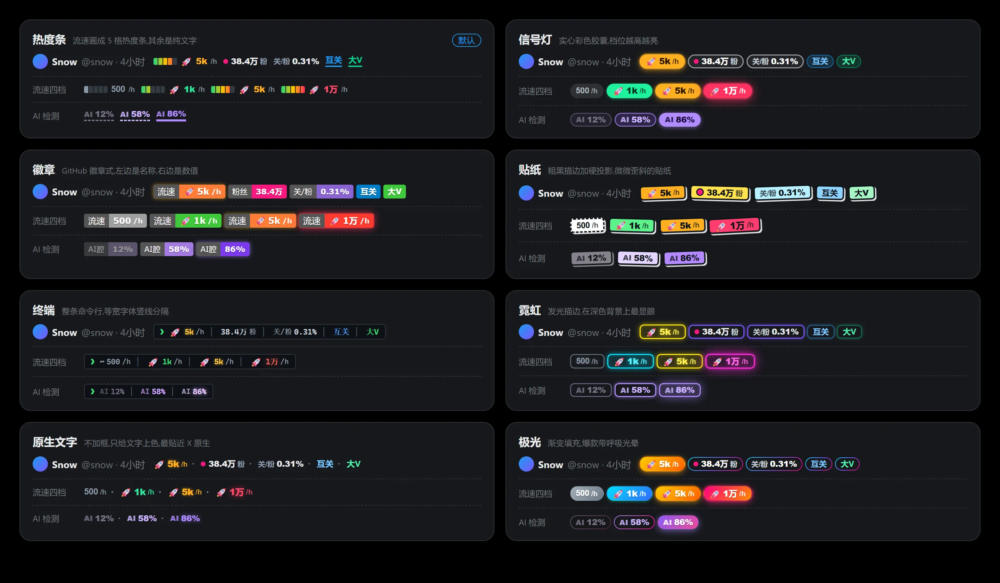
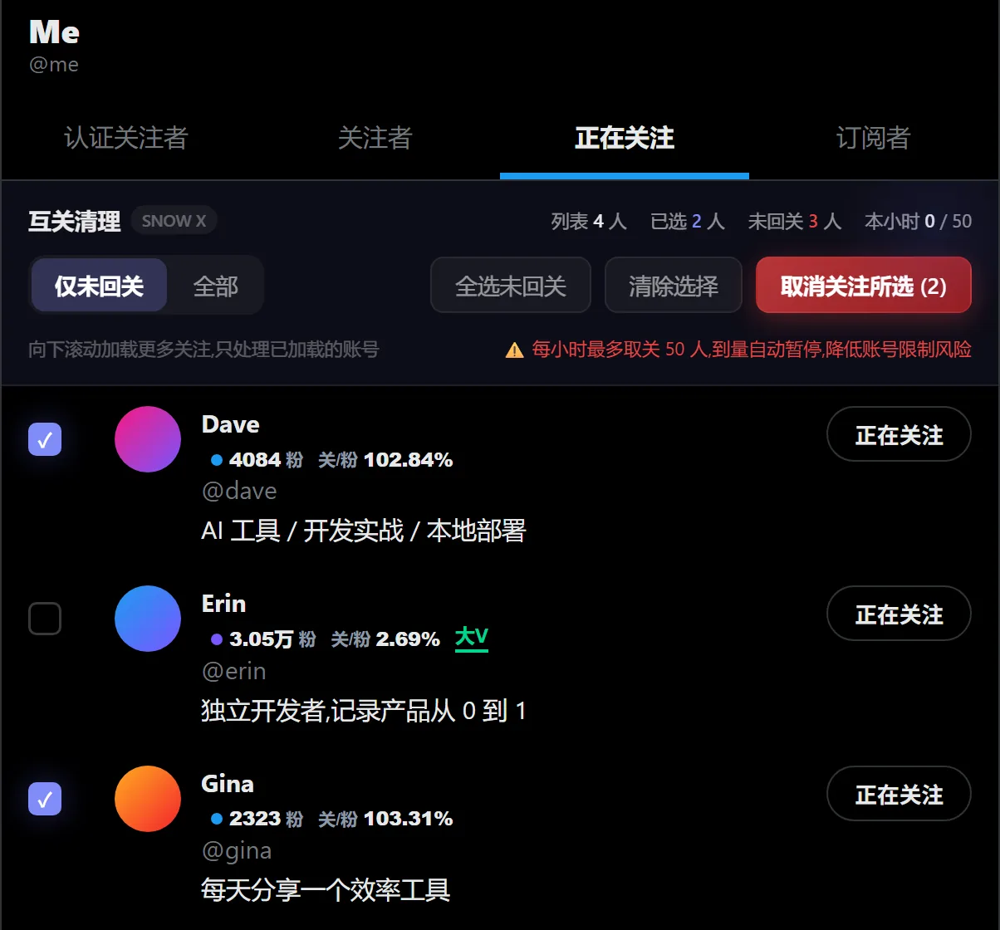
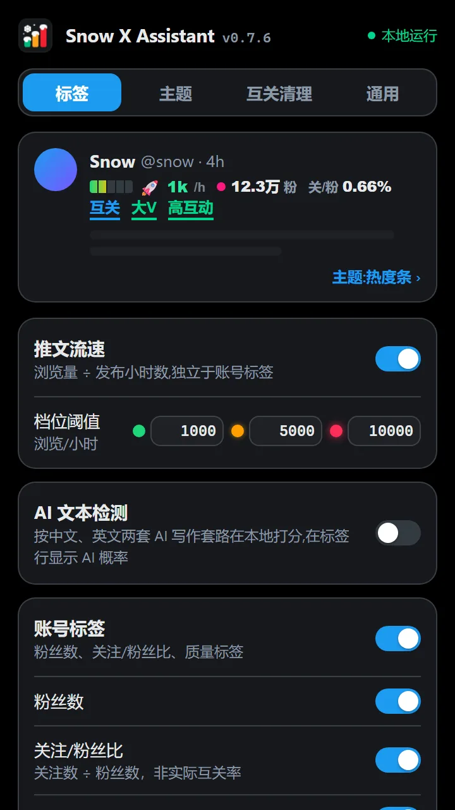
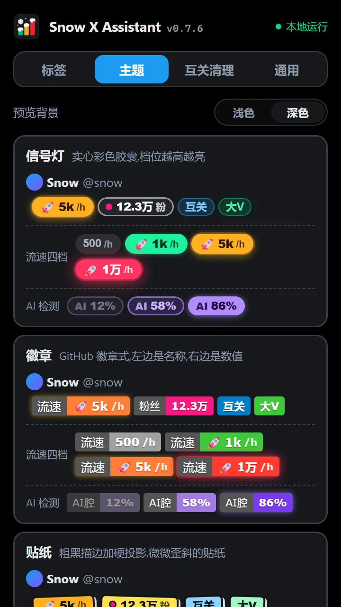
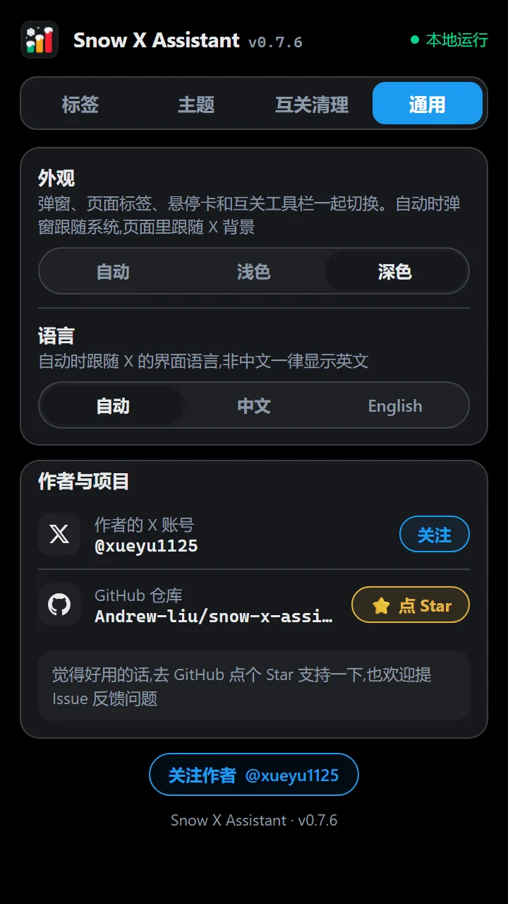

推文流速
浏览量除以发布至今的小时数。1k、5k、1w 起依次进入三档，档位越高越亮，爆款带光晕，滑动时一眼就能抓住。
Chrome 扩展 · Manifest V3 · v0.8.0
在 X 的信息流里，为每条推文标出实时流速和 AI 腔指数，为每个账号标出粉丝量级与质量。另附视频下载和一套克制、可控的互关清理工具。

01 / 功能
只想看流速，就只开流速。所有改动即时生效，不用刷新页面。
浏览量除以发布至今的小时数。1k、5k、1w 起依次进入三档，档位越高越亮，爆款带光晕，滑动时一眼就能抓住。
中英文两套规则，识别套话开场、总结收尾、万能夸夸回复和排版套路，给出 0 到 100 的 AI 腔指数。完全在本地计算。
粉丝量级、关注/粉丝比，以及互关、未回关、大V、新号、老号、高互动、低活跃、疑似互粉号八种质量标签。
时间线操作栏多一个下载按钮，或在弹窗粘贴推文链接，按清晰度保存 mp4。仅限个人保存与学习使用。

02 / 细节
悬停任意标签，弹出账号与推文的详细数据卡：粉丝、关注、比值、注册时长，浏览、赞、转、评、藏和爆款分，以及 AI 检测命中的具体规则。
03 / 主题
热度条、信号灯、徽章、贴纸、终端、霓虹、原生文字、极光。形状、字体与排版各不相同，流速、AI 检测、账号标签和悬停卡共用同一套。

04 / 互关清理
只在自己的「正在关注」页出现。筛出未回关账号，勾选后批量取关，点击的是 X 自带的按钮。

05 / 设置
标签、主题、下载、互关清理、通用。顶部实时预览，改完立刻看到效果。



06 / 隐私
07 / 安装
暂未上架 Chrome 网上应用店，请以开发者模式加载。Edge、Brave、Arc 等 Chromium 浏览器通常也可用。
chrome://extensions，打开右上角的开发者模式。manifest.json 的目录。